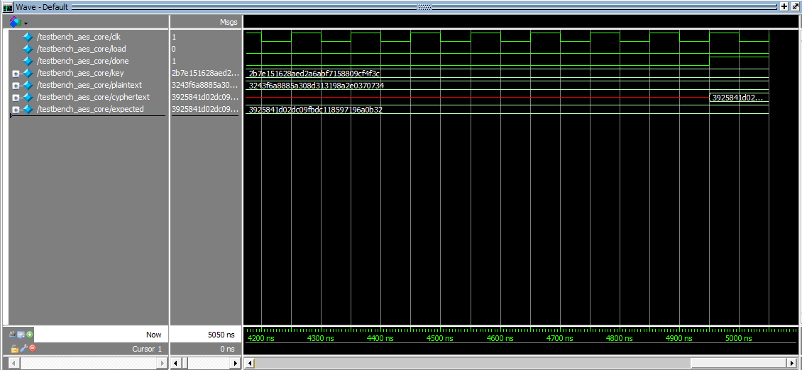
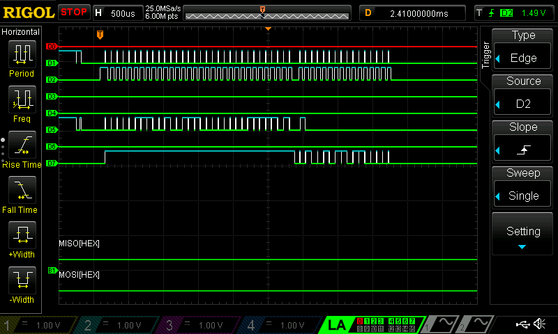

Lab 7: The Advanced Encryption Standard
Introduction
In this lab we were tasked with creating a hardware accelerator to perform 128-bit AES encryption.
Lab Overview
The goal of this lab was to use our FPGA as a hardware accelerator to perform 128 bit AES encryption must faster than the MCU could. We used the MCU to send plaintext and a key to the FPGA over SPI which then encrypted the message and sent it back to MCU.
AES
AES or the Advanced Encryption Standar is a symmetric encryption algorithm that is used world wide to secure data. It became popular in 2001 as a relatively simple but efficient way to encrypt peoples data based on a certain key. This allowed messages to securely travel to people who had the same key and could unlock the message while looking like gibberish to whoever else intercepted it. AES encryptes data by applying a series of tranformations to plaintext and mixing it with key for multiple rounds. These transformations and mixing make it a perfect process for the FPGA which can perform these operations extremely quickly. The transformatons include subBytes, shiftRows, mixcolumns and the key mixing is in the function addRoundKey. The whole pattern is shown in the diagram below.
Designing the AES Controller and Submodules
The first step was to design each transformation and key mixing submodule. Luckily mixcolumns was alrady provided for us, however subBytes was tricky as it involves substituting bytes in the 128 bit partially encoded sequence with bytes defined in a look up table shown below.

This lookup table was giant so it couldn’t be stored in the FPGA. However it was able to be stored in DRAM and accessed in the subModule. From there the subButes submodule parsed the 128 bit input and replaced each byte with the corresponing look up table value.
Next up was shiftRows which simply left shifted each row by 0, 1, 2, or 3 bytes respectively. This submodule is described below.
Lastly was addRoundKey which ended up being both the simplest and most confusing. addRoundKey is simple as all you do is XOR each column with the roundKey. However computing the roundKey is not simple. Since our addRoundKey ended up being used 11 times we had to generate 11 roundKeys Each round key is broken down into 4 words (total of 44 words) and is described by the psuedocode below
And can be more clearly visualized in the example:
We can see that the first 4 words are the original key of the AES encryption. For each additional set of four words (index 4 through 43) the previous word is set as a starting point, then shifted left by one byte, substituted based on the look up table described in subBytes, XOR’ed by rcon which changes each round, and finally XOR’ed with the word that has an index of 4 less than the current word. The next three words are then the previous word XOR’ed with the word four before.
After all the submodules were designed it was time to piece them together in the AES controller. The block diagram of the entire aes module is given below.

I followed this schematic when writing the system verilog code. Connecting modules and using different enabled flipflops to know when to move data in different rounds and for specific timing.
Testing
When testing I first simulated using waveforms in model sim. I first individually tested each submodule. An example of testing mixRows is below.
As you can see these consited of simple tests with just an input to the function. I then looked at the output on the waveform for the desired output. I chose my input based on the Cipher example in Appendix B of National Institute of Standards and Technology AES publication.
Once I knew that all my submodules worked I was able to use Professor Brake’s large testbenches to test my entire system. In the photo below we start with an input plaintext and key and at the end we successfully determine the right cyphercode and raise the done flag to enable the SPI return!

After confirming my simulations were working it was time to upload my code to my FPGA and wire up my board. Once it was wired up I used the physical logic analyzer to monitor the SPI process and determine if it worked as well as it did in simulation. Below is a photo from the logic analyzer showing the entire process.

D2 is the chip enable and you can clearly see there is 32 packets of 8 bit data being sent to the FPGA which contains plaintext and key, 128 bits each, and then a short while later there are 16 more packets sent back to the MCU which contains the encrypted cyphercode.
In the Image above you can see a zoomed in version of each chip enable and can clearly see the plain text data beeing sent over one byte at a time!
Pinout
To wire up my MCU and FPGA, the following pin layout was used.
PA10 and PA9 were used to verify if the returned cypher text was what we expected when we sent in the specific plaintext and key. PA9 would light up when correct and PA10 would light up when the encryption process failed or was done incorrectly.
Outcomes
While this lab was one of the most brain wracking the outcomes was probably the most lacklaster of all labs. Fortunately I was able to fit the hardware from my systemVerilog code on my FPGA and get PA9 to light up verifying I ran the encryption algorithm properly using the FPGA as a hardware accelerator.
Time Spent in Lab: 24 Hours